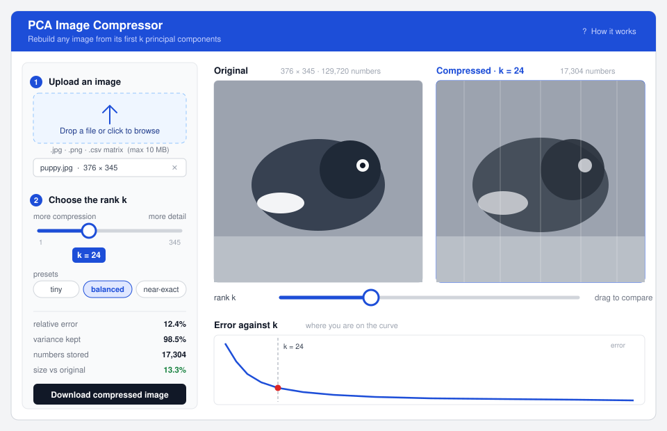

Design: an interactive PCA compression app
This page is the design half of the assignment: what an app should look like that lets somebody upload an arbitrary image, choose a compression level k, and see the compressed version next to the original. The working implementation is here.

What the app has to do
- Take an arbitrary image from the user (a photo, or a raw matrix as CSV).
- Let them choose the amount of compression, i.e. the rank k.
- Show the compressed image next to the original so the two can be compared directly.
How I would want it to look
The thing I would actually be doing in this app is sliding k up and down and watching what breaks. Everything in the layout follows from that: the slider and the two images have to be visible at the same time, and moving the slider must not move anything else on the screen.
A narrow control column on the left, numbered 1–2–3
Upload sits at the top left, because it is the only thing you can do on a blank app and the top
left is where you start reading. It is a drop zone rather than a bare "Choose file" button, with the
accepted formats and the size limit written underneath so that a rejected file is never a surprise;
once a file is loaded the zone collapses to a one-line summary (puppy.jpg · 376 ×
345) with an × to clear it, so it stops taking up space you now need for the images.
Directly below it is the rank control, labelled more compression ↔ more detail rather than just "k" — the underlying number matters to somebody who has taken this course and to nobody else, so the number is shown in a pill on the handle while the axis is described in plain words. The three preset chips (tiny, balanced, near-exact) map to fixed fractions of the variance, which gives a first-time user a sensible starting point without having to understand what an eigenvalue is.
The numbers underneath, not in a separate tab
Relative error, variance kept, numbers stored and size relative to the original sit at the bottom of the same column, in a fixed order so they can be read as a dial rather than as text: you learn where "12.4%" lives and then just watch it move. Size-vs-original is coloured, because that is the only one with a right answer — it is the payoff of the whole exercise, and it should go red once k is large enough that the "compressed" form is bigger than the original.
The two images side by side, same size, never moving
Original on the left, reconstruction on the right, identical dimensions, with the header of the right-hand panel carrying the current k so a screenshot is self-documenting. Both panels keep a fixed frame regardless of the aspect ratio of the upload, so nothing reflows while the slider moves — reflow is what makes this kind of comparison tool unusable. On a narrow screen they stack vertically instead of shrinking, and I would add a drag-to-reveal split view on mobile, since side-by-side stops working below about 700 px.
A second copy of the slider directly under the images
This is deliberate duplication. The interesting interaction is "look at the picture, nudge k, look again", and that should not require moving your eyes and cursor back to the sidebar every time. The two sliders are the same control and stay in sync.
The error curve at the bottom, with a marker showing where you are
The curve is what turns the app from a toy into something explanatory: it shows that the first few components buy almost everything and the rest is a long tail, and the red marker tells you whether you are on the steep part or wasting storage on the flat part. Clicking the curve should set k, which makes "find the elbow" a single gesture.
Small things I would insist on
- A download button for the reconstruction — otherwise the result cannot leave the app.
- The compressed panel updates while the slider is dragged, not only on release; for a large image that means debouncing the redraw rather than recomputing the eigendecomposition on every pixel of travel (it only has to be computed once per upload).
- Colour images should be handled by compressing each channel separately, but the default view stays grayscale so that what is on screen is exactly the matrix being decomposed.
- An optional third panel showing the residual |X − X(k)|, which is where the missing detail actually went — useful, but off by default because it needs explaining.